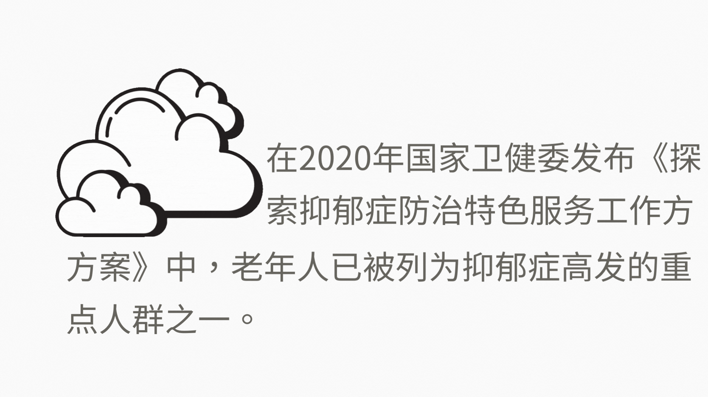
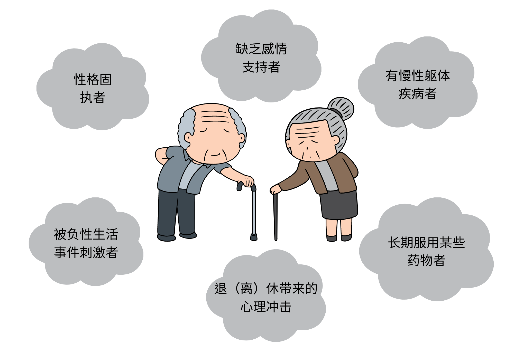

「沉默的高发者」
关于老年抑郁

引言
根据世界卫生组织的全球疾病负担报告得知，在2019年，中国55岁以上的老年抑郁患者，伤残调整生命年（DALY）可达310万，DALY反应了患者在健康状态方面失去的年数，其中女性占196万年，男性116万年。随着患病人数逐年增加，伤残调整年也呈现上升趋势。
群体细分

2018年中国老年人的基本情况显示，低龄老年人口总量超过中高龄老年人口总和，老年人口内部年龄结构相对年轻，这昭示着老龄社会的巨大潜力亟待开发，需要加强对老年人的关爱力度。地区分布方面，农村老年人占7成，城镇占3成，情感状况中有配偶和无配偶的老年人各占五成。（无配偶包括单身、丧偶、离异等情况）

2018年的CHARLS调研显示，老年人的受教育程度普遍较低，有七成的老人受教育程度不超过小学水平，更有四成不具有识字能力，该数据为老人抑郁现象的形成提供了设想。子女情况和居住方式反映了老年人的孤独指数，数据显示三成的老人子女是离家的状态，不与自己同住，虽然有八成的老年人与家人同住，却不一定与子女同住。
世界卫生组织全球疾病负担数据公布，2019年全球老年人的抑郁人口达到八千万。2007年中国的老年抑郁患病率占全球老年抑郁患病率的23%，而在2019年中国的老年抑郁患病率全球占比达到了26%，抑郁人口超过了2千万，中国的老年抑郁情况逐年严峻。 按性别分组来看，性别是导致抑郁症发病的主要因素。受生物学、社会学等多重因素的影响，女性相对于男性，抑郁症的患病率、发病率等疾病负担指标明显高于男性中国老年抑郁患者。抑郁症存在家族聚集性遗传现象，女性具有特定基因的遗传因素如5-羟色胺酸基因、色氨酸羟化酶基因和脑源性神经营养因子基因等，使得在家族中女性抑郁症的患病率高于男性。当今社会仍存在性别不平等现象，女性的社会经济地位相较于男性低，相对缺乏权利和地位，女性需要扮演更多的角色（妈妈、妻子、职业女性），使其罹患抑郁症的概率更高。
关于诱发老年抑郁的因素有很多，中国老龄科学研究中心例举了以上这些可能因素。很多人把抑郁症称为心灵 “感冒”，但这个疾病的严重程度远远超过了感冒，给老年人的健康带来很大危害。
案例一：失眠致郁
2016 年下半年，张桂芬无缘无故连续失眠好几天漫漫长夜里，她在床上翻来覆去、反复琢磨，却想不通原因。失眠的症状并没有改善，一到夜间，她总“胡思乱想”，紧接着胃口变差、吃不下饭，常常觉得内心烦闷。 这种情况持续将近三个月后，丈夫陪着她去积水潭医院，“从头检查到脚”，没有查到任何躯体疾病。随后，张桂芬又去了北京一所精神专科医院就诊。 “我对谁都没意见，就是睡不着，心理憋得慌”当医生询问张桂芬的症状时，她说着说着，便大哭起来。“哭吧，使劲哭，哭出来就好。”那时候，医生这样安慰她。 张桂芬最终被确诊为患有老年期抑郁障碍，没有明显诱因。
案例二：因病致郁
72岁的邹英“阳了”，退烧后她一直还是感觉到浑身不适：食欲不振、失眠、头昏，人容易疲乏。 家人带她去看医生，吃了两个月中药没有见效，后来又带她去精神心理科就诊，确诊为中度抑郁。 为了试图营造快乐的气氛，孙女给邹英买了一台智能手机，让她在网上找点乐子，并时不时和她交流。孙女对邹英说：“抑郁症是一种病，坚持吃药就会好的。”邹英一开始还挺高兴，接着却哭了起来，她说：“啥抑郁不抑郁的，人老了就会这样，没有希望的了。你不应该对一个没用的人这么好。”
案例三：孤独致郁
71岁的柳老师曾是一名优秀数学老师，19岁参加工作就照顾父母，然后一个人挣钱养大了比他小十岁的弟弟，最后伺候了瘫痪在床8年的老伴，2015年将她送走。从此，柳老师突然找不到生活的重心了。在老伴去世后的近一年时间里，从二七路到九峰陵园，柳老师每天转2趟公交，加上步行，来回70多公里，去老伴墓前和她“说说话”。冬天的早上常常天不亮就出发，晚上八九点才到家，风雨无阻。3年过去了，性格本来就内向的柳老师过着几乎不与人交往的日子。
发病原因
2022年国民抑郁症蓝皮书调查的数据显示，在引发老年人抑郁的数据中，“对慢性病的治疗焦虑”占65%，对于年龄逐渐增加的老人来说，身体上会开始出现无可避免的“慢性病”，继而产生影响他们正常生活的一些事情，身体机能的退化，力不从心会容易出现情绪上的波动，或者退休后经济的影响等等，由此可看出导致老年人抑郁的根本原因不是年龄本身，而是与年龄相关的健康、 自理能力等因素。

随着年纪增长，老年人的身体机能不断退化，使得各种疾病尤其是慢性病增多，当身体上的疾病导致病痛或行动不便时，中老年人会出现消极感，长此以往会产生抑郁情绪，甚至患上抑郁症。抑郁症反过来又会加重慢性病如高血压、心脏病的病情，形成恶性循环。无论是在城市还是农村，高血压成为影响他们情绪的关键。 慢性病还影响着老年人的日常活动能力、认知能力，降低了老年人日常社交的质量，从而增加其心理压力。慢性疾病病程长且不易恢复，需要经常住院治疗，长期的医疗费用增加的家庭经济负担，也会增加老年人的心理负担，长此以往导致了抑郁症状的发生或加重。此外，慢性病患者多需要长期服用药物，药物副作用的累积也会导致抑郁水平恶化。
根据2018年的CHARLS调查，65岁以上老年人疼痛检出率为61.06%，其中腰痛、膝盖痛、腿痛、肩膀痛和头痛最为常见。然而，老年人及家属对疼痛缺乏正确认识，认为疼痛只是衰老的一部分，并未将其作为一种病状，或者在普通门诊检测不出病因，家属会视作为老年人的无病呻吟。长期受到疼困扰无法缓解，老年人的情绪症状容易被躯体不适主诉所掩盖，会致使老年抑郁症识别率低下。
13%老年人同时存在抑郁和疼痛症状，以及老年抑郁症易与一些其它症状相混淆，在其他科室检查无果，应考虑前往精神疾病科。
经济状况对老年人生活质量的影响涉及老年人的衣食住行等，老年人的收入水平与其他群体存在差别, 同时群体内部的差距也不小。经济发达、城市化进展快的地区基础设施完善，医疗服务可及性强，养老产业高度发展，能够为老年人养老提供良好的物质支持以及精神上的慰藉，营造便利多样化生活环境，反之，经济因素也成为农村患者治疗精神疾病最大的障碍和负担, 有患者患病15年从未接受过任何正规、专业的治疗。
疼痛部位以及患慢性病的数目增加都会增加老年人抑郁症状发生的风险。这意味着若我们发现老年人身体出现疾病疼痛时也要及时关注老年人的心理问题，给予老年人疼痛管理的相关健康科普，帮助老年人正确应对疼痛的困扰，指导老年人养成健康的生活方式。同时多鼓励老人参与社交，保持沟通和愉悦的心情是抑制抑郁很好的方式。
疾病和老化带来的自理能力丧失，需要通过他人帮助进行生活起居，这会增加老人对自身的无用感评价，他们害怕成为家人的累赘，加上活动能力受到限制，减少了与他人来往的机会，都是对心理的打击。
我国的计划生育政策提倡独生子女，因此当今社会出现了空巢老人的现象，子女经常不在身边陪伴，老年人情感依托缺失，内心空虚、孤独、伤感，情绪低落甚至出现抑郁倾向。另外随着年龄的增长，身边亲戚、朋友的去世会加重老年人对死亡的恐惧感，产生负面情绪。
2018年中国老年健康影响因素跟踪调查（CLHLS）数据显示，独居老年人抑郁患病率为26.63%，高于中国一般老年人抑郁的患病率23.6%，独居老年人尤其是高龄独居老年人，作为一个特殊的老年亚群体，多有慢性病或认知功能损害，其与外界接触的机会远远低于一般老年人与非独居老年人，如果出现抑郁症状，很难及时发现和察觉，一旦被忽视，容易造成不可逆的严重后果，如自杀、自残、病死等。 个人病耻感指个人对患抑郁症而产生的一种内心耻辱体验，不愿意告诉他人。感知病耻感指个人感知到的社会大众对抑郁症患者的偏见和歧视。因为对疾病没有正确认识，一些病人把老年抑郁症和精神分裂症等其他精神疾病划等号，因担心被认为是“疯子”，而不愿就医。从调查发现，年龄越大的患者，个人对抑郁症的耻感越高，对于社会歧视也有更高的感知。其中，女性较男性的感知病耻感更强, 女性更容易认为别人会用歧视的眼光看待她们, 更倾向于悲观地评价自己和所处的环境。以及老年人的传统观念较深，低文化水平的身份会加重他们的患病羞耻感，未接受高等教育也导致他们不具备良好的心理素质。 《2022年国民抑郁症蓝皮书》显示，78%的患者会认为子女陪伴是对于缓解抑郁最有效的方法，而社交平台上的患者家人则多表示就医用药是最佳的治疗途径。
在客观上，接受治疗和服用药物可以让老人的抑郁症状最高效率地得到治愈，但心理疾病的根治仍需子女的合作，因为很多老人不会表露渴望得到儿女的关心，也不愿意承认自己患有抑郁病症，所以老人会更倾向于将自己心态的好转归功于子女的陪伴，而非治疗效果。因此，老人从抑郁症中恢复的过程中，子女及家人的支持起着至关重要的作用，家人可以通过提高沟通的频率，鼓励老人敞开心扉，带着同理心却不带批判言语，这可以帮助他们重新建立关系，感觉受到别人的理解与支持。老人在和子女充分沟通过后，也会更积极地前往医院进行正规治疗。
在小红书里关于长辈患抑郁如何应对的求助帖中，统计评论文本信息，发现频率最高的词为“吃药“，其次是“医院”、“中药”、“多陪陪她”。
在前面提及的病耻感调查中发现，大部分受访老年人认同“抑郁症患者如果愿意, 他们可以振作起来”的观点，这显示了老年抑郁患者对抑郁症存在误解，认为抑郁症患者是可以通过自己的意志力振作起来的，但实际上抑郁症患者存在认知功能损害, 需要尽早规范接受治疗才能康复, 不是通过鼓励、劝说等方式就可以振作起来的。
对于老人抗拒就医咨询，家属可以先尝试中医调理，中医理论不会让老年人有恐病情绪，有助于身体恢复。北京大学第六医院院长陆林表示：“目前抗抑郁药物治疗效果明确，副作用小，必要时无需排斥。”
对于变老，我们似乎还没有足够的准备，尽管中国在精神卫生领域已经取得了许多成就，但中国抑郁症疾病负担降幅不明显，随着人口期望寿命增加与人口老龄化日趋严重，抑郁症在中国仍然是不容忽视的疾病，尤其应该关注和重视中老年人群的抑郁症预防与控制。


老年人患者主动就诊的比例极低，病耻感便是一个重要阻碍因素，病耻感会让抑郁症患者担心自己及其家属感受到外界的歧视, 导致他们不愿意对外寻求帮助，排斥去医院，不吃医生开的药，治疗依从性变低，病情从而延误、恶化，甚至产生轻生的想法。
社会大众对抑郁症的误解，让老年人难以袒露自己的抑郁经历和情绪，若无旁人察觉，他们也许永远不会主动提起，不断的欲言又止和沉默，换来的结果就是“不被关注”。正视病症，陪伴与理解
结语
团队成员
赖慧怡 施铮铮
指导老师
赵甜芳
数据来源
1.小红书
2.世界卫生组织全球疾病负担
3.《2022年国民抑郁症蓝皮书》
4.《2019中国抑郁症领域白皮书》
5.《2019中国老年人生活质量发展报告》
6.《老龄蓝皮书：中国城乡老年人生活状况调查报告（2018）》
7.中国健康与养老追踪调查（CHARLS）
8.中国老年社会追踪调查(CLASS)
9.吕少妮，任淑敏，郑春惠，等.抑郁症相关基因的文献计量分析[J].中华医学图书情报杂志，2009
10.周洋,杨冰香,王晓琴等.武汉市城区居民抑郁症病耻感调查及影响因素分析[J].神经损伤与功能重建
11.郭俊慧,王高华,朱志先,刘忠纯,舒畅,肖玲,代洪.脑源性神经营养因子对重症抑郁及其认知功能障碍的影响[J].神经损伤与功能重建
12.李鹏程、 罗媛、 石小娣: 《 甘肃省农村地区精神疾病患者生存状况的田野调查》 , 《 基层医学论坛》 2013 年第 28 期。
13.武汉日报《空巢老人陷精神孤岛 每天往返70公里墓地跟老伴"说话"》
14.《多少老年人，困在抑郁中？》https://mp.weixin.qq.com/s/1xsXp3sElPWqrysifGdTAQ
15.《抑郁症，正在逼近 2.5 亿中国老人》https://mp.weixin.qq.com/s/uJq21ZuCBf3eFRTArQxY0g
新闻与传播学院 网络与新媒体专业
2023© 暨南大学